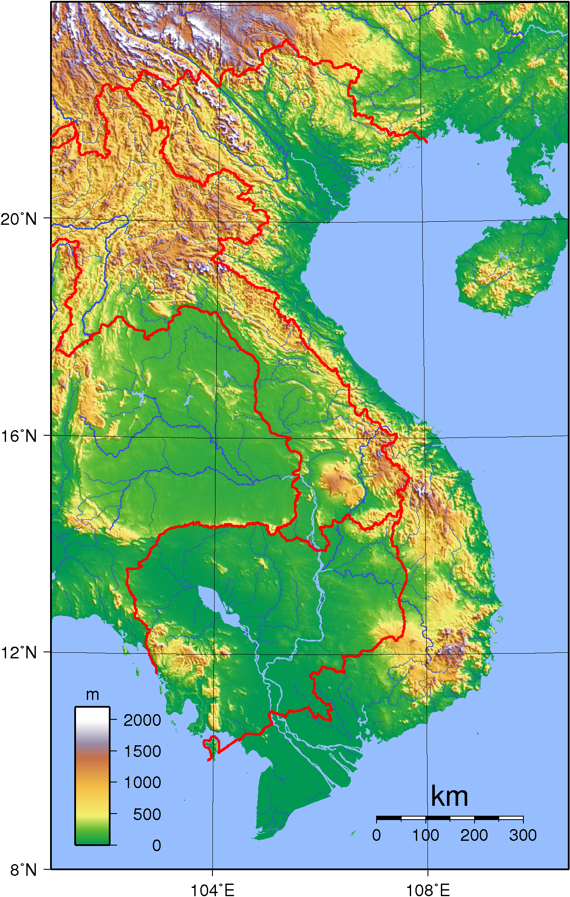
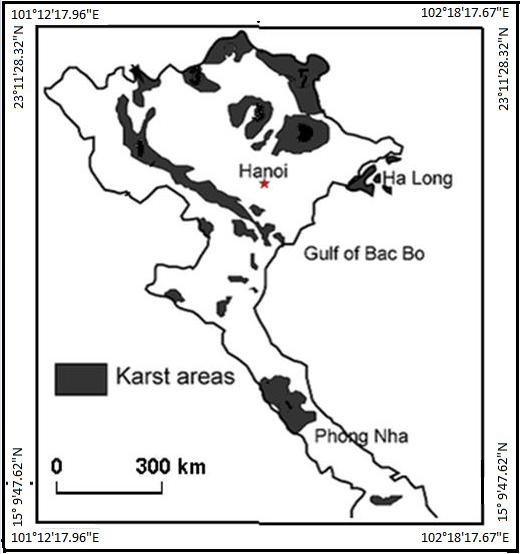
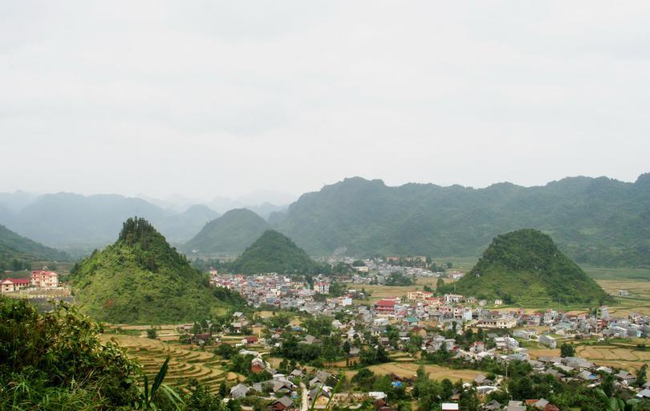
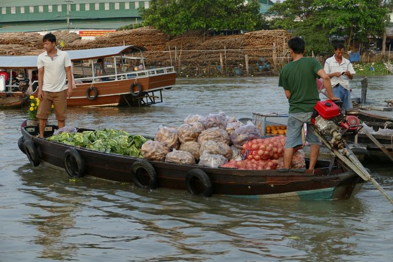
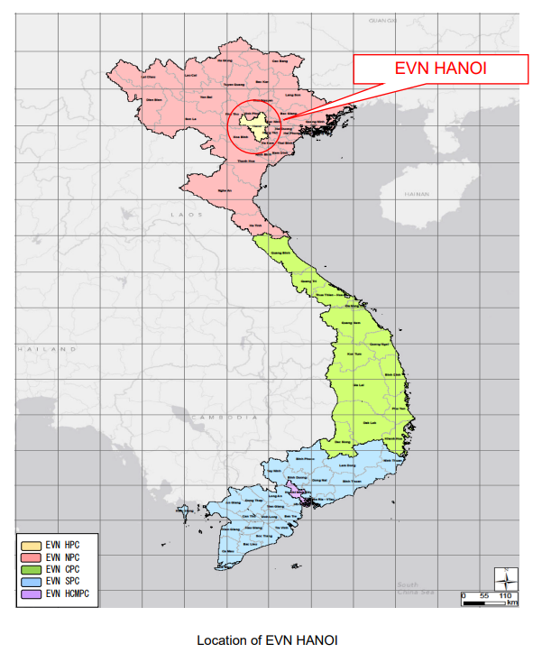
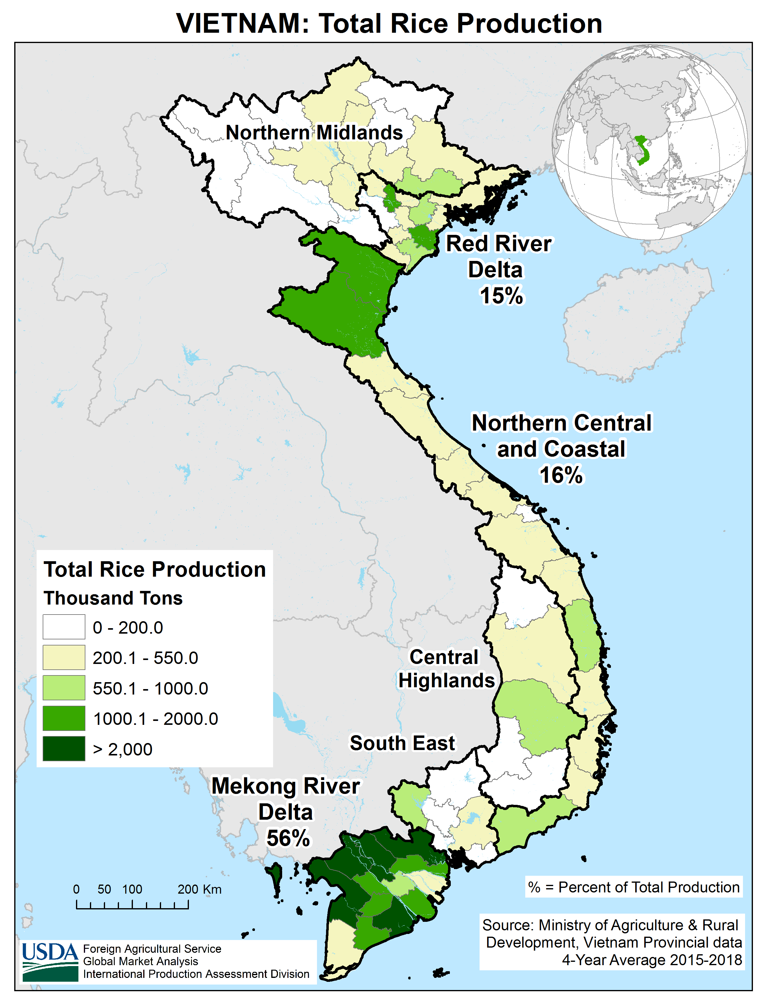
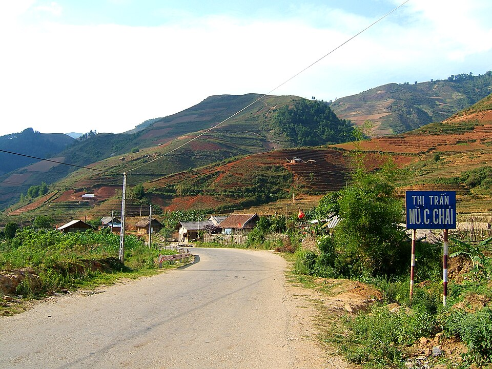
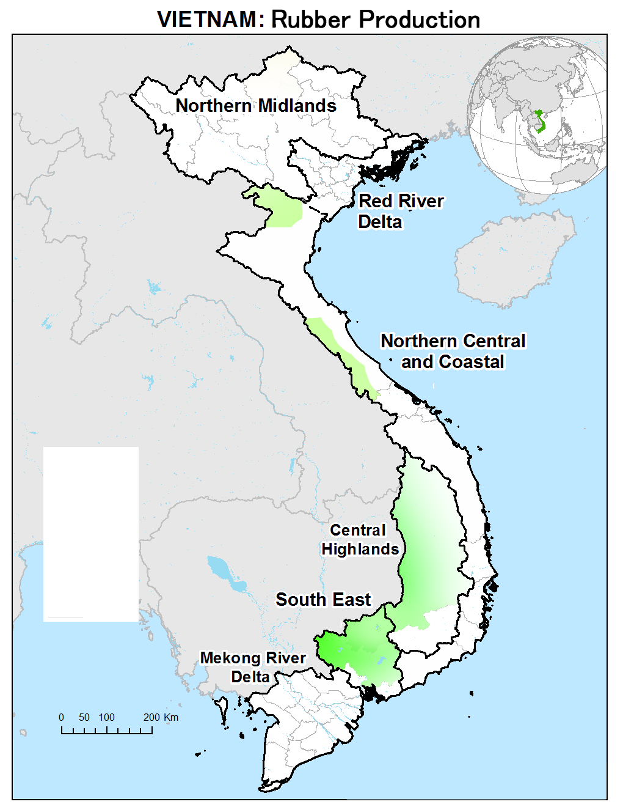
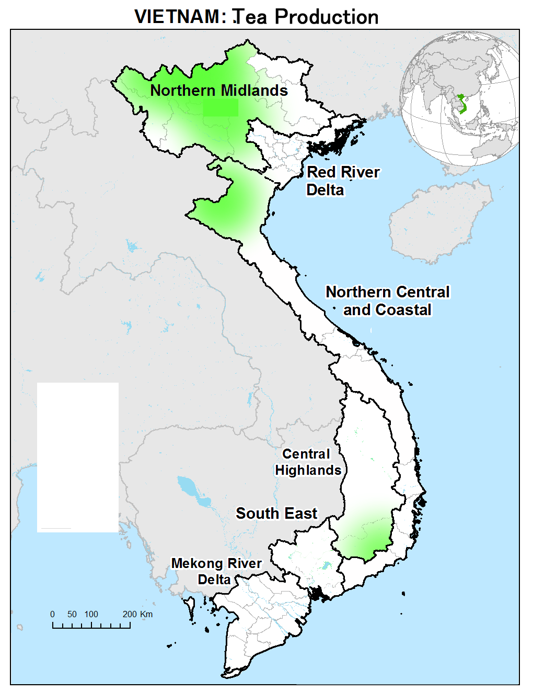
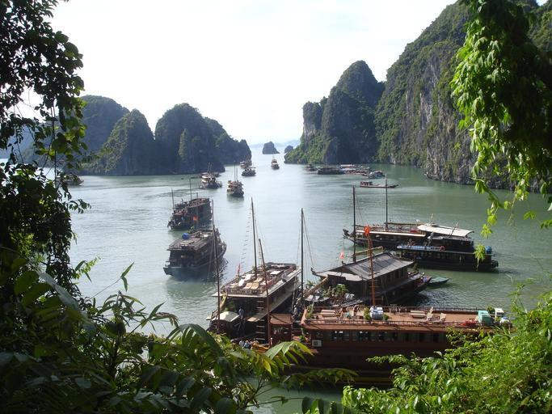

国・地域の見分け方
- ドメインは.vn
- 道路は右側通行
- 赤い国旗が掲揚されている
- 標識のポールが赤白のストライプになっている
- 赤白のボラードがある


{{< amazoncard url=“https://amzn.to/48yfyEV” title=“現代ベトナムを知るための63章【第3版】 (エリア・スタディーズ39)” price=“¥2,200” tagline=“ベトナムのいまがわかる本書が10年振りに全面改訂。第3版はコロナ禍以降の政府や市民の動き、ベトナムの多様性、社会問題に焦点を当て大幅にボリュームアップ。ベトナムと緊密な関係性を結び、人的交流が盛んな日本にとっても直視すべき論点がここにある。”
}}
州・地域の絞り込み
地形
国境沿いにアンナン山脈が伸びている。

以下の黒いエリアにはカルスト地形が広がっていると思われる(参考文献 Tuan, L. C. 『Characteristics of karst polje in Vietnam and associated geohazards.』 Int. J. Sci. Res 9 (2020): 1391-1398.)。下の写真のような不規則に尖った小さな山が多く見つかる。


水路が網の目のように広がっており、小さい橋もしばしば見かける。地盤の関係か、Mỹ Tho市より西側のメコンデルタには鉄道は一切存在せずバスや河川運輸がメインの交通手段となっている。ほとんどの水路の周りは木やヤシが生えている。鉄の欄干がある橋＋木の生い茂った水路＋逆▽の電柱で確定できる（例）？。


By An Nguyễn Hải, CC BY-SA 3.0, Link
メコンデルタのような細かい水路網はなく、コーヒーやキャベツといったいろいろな農作物の栽培地となっている(参考文献 Tây Nguyên)。

By DXLINH - Own work, CC BY-SA 3.0, Link
建物
- 店の看板などに割と住所が書いてある
- 地域ごとに配電を担当する業者が異なり、電柱や装置もそれに伴って異なる可能性がある(参考文献 Collaboration Program with the Private Sector for Disseminating Japanese Technology for Electricity Distribution Planning System in Vietnam Final Report)
2025年に大規模な再編があり6中央直轄市57省を統廃合して6市28省となる予定なので、Google Map上では表示が変わる可能性がある点に注意。下のマップは再編前の地図（拡大して確認してください）。

Public Domain, Link
国営の電力会社が地域ごとの配電を担当しており、電柱などのインフラが異なるかもしれない(参考文献 【画像出典】Collaboration Program with the Private Sector for Disseminating Japanese Technology for Electricity Distribution Planning System in Vietnam Final Report)。

農業
- 田んぼは南部のメコンデルタに多く分布する
- 内陸ではゴムのプランテーションが多く見つかる
- 北部と中部の山岳地帯には茶畑が分布している
- コーヒーの生産はテイグイエン周辺の省が多い(参考文献 ベトナムのコーヒー産業の動向とポテンシャル - VietViz)
- こしょう
- Quảng Nam・Quảng Ngãi・ビンディンなど中部ではアカシアのプランテーションがたまに見つかる
メコン川流域が生産の半分超を占めているが、北部の平野にもある程度存在する。紅河デルタもメコンデルタよりエリアは小さいが田んぼが多くある(参考文献 ベトナムの農地政策 - 国際領域 主任研究官 岡江 恭史)。

生産量は多くないものの山間部の農業は茶と米が中心であり、棚田を見つけることができる(参考文献 Nghĩa Lộ (xã), Nghĩa Lộ)。

内陸ではゴムのプランテーションが多く見つかる。記録によるとGia Lai省とTây Ninh省の周りが多い(参考文献 Mapping rubber tree growth in mainland Southeast Asia using time-series MODIS 250 m NDVI and statistical data)が、出典によって若干分布が異なる。

山岳地帯の一部ではお茶畑が分布している(参考文献 Sustainable tea production through agroecological management practices in Vietnam: a review)。

_(2) (1).jpg)
詳しい分布は不明だが、コーヒーと近い分布であり北部にはほぼ存在しないという(参考文献 Main area produce pepper in Vietnam )。

By Tonbi ko - Own work, CC BY-SA 4.0, Link
中部ではベトナム政府が30年前に実施した大規模な植林プロジェクトの影響でアカシアの植林地が見つかる(参考文献 Mekong Eye：厄介なジレンマ：ベトナムのアカシア植林地はそれほど緑ではないかもしれない)。アカシア栽培面積は世界最大でありフローリングの材料として重要な素材。

ドラゴンフルーツはBình Thuận省の大規模な農園の生産が多く、2024年には約4億4200万米ドルを超える輸出をしておりベトナム輸出の主力商品となっている(参考文献 ドラゴンフルーツ、輸出トップから急転)。ただし写真はマレーシアのもの。
_02.jpg#/media/File:HL_Dragon_Fruit_Eco_Farm_(230625)_02.jpg)
By *angys* - Own work, CC BY-SA 4.0, Link
都市・町の絞り込み
- 都市ごとのロゴが通り名についていることがあり、都市が判断できる
- ĐT651沿いはリゾート地であり道路わきにも白い砂浜が広がっている
- ハロン湾には沈水カルスト地形が広がっている

都市ごとのロゴが通り名についていることがあり、都市が判断できる。画像はハノイ市(参考文献 ハノイ)。


海沿いの道は必ずしも多くないものの、海沿いには石灰岩の岩峰が屹立するカルスト地形が沈水することでできた珍しい地形が広がっている(参考文献 ハロン湾の沈水カルスト地形 <地質調査所 須藤 定久>)。

- Phú Quốc島というカンボジア側の離島にもカバレッジがある
- Móng Cáiは中国との貿易が盛んな都市であり北京語や広東語の話者もいる